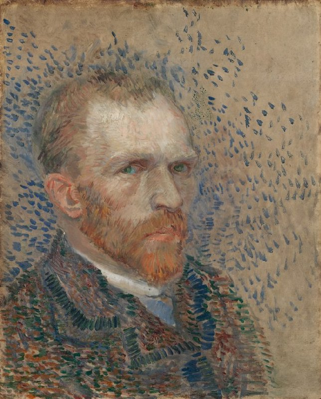
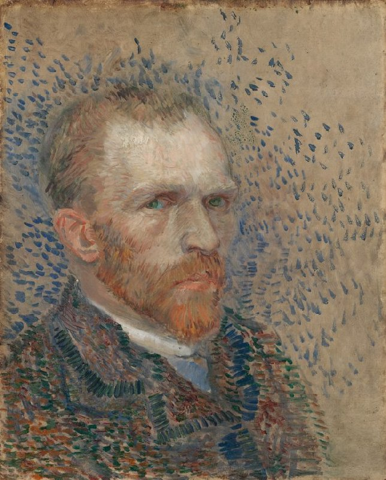

Our Mission and Vision
Welcome to Vincent, your dedicated online space to explore the life, art, and enduring legacy of Vincent van Gogh, one of history's most influential and enigmatic artists. Our mission is to share the compelling story of this extraordinary painter, whose vision and creativity left an indelible mark on the art world and continue to resonate deeply with audiences worldwide.
At Vincent, we're more than just an informational site; we're a community dedicated to preserving and celebrating van Gogh's spirit. We believe that art has the power to heal, to connect, and to inspire, much as it did for Vincent himself. By exploring the life of van Gogh, we hope to spark a sense of curiosity, empathy, and a renewed appreciation for the transformative power of creativity. Every visit to Vincent is an invitation to step into the life of a visionary and to carry forward the legacy of one of art history's most beloved figures.
Whether you are a long-time admirer of van Gogh's work or a newcomer to his unique perspective on life, Vincent invites you to connect with the man behind the art. Follow our updates, engage with our community forums, and join us in celebrating the life and work of Vincent van Gogh. Thank you for visiting, and may you find inspiration and a deeper connection to art, life, and beauty in the pages of Vincent.
Discover the Life of a Legend
On our Biography page, explore the inspiring yet tumultuous life of Vincent van Gogh, an artist whose work and legacy defy convention and time. Born into modest surroundings in the Netherlands, Vincent embarked on a journey filled with profound passion, resilience, and boundless creativity. His early years were marked by uncertainty and a relentless quest for purpose, as he tried his hand at various pursuits before ultimately discovering his true calling in art. Throughout his career, Vincent endured immense hardship, from financial instability and social isolation to the inner struggles that often threatened to overshadow his progress. Yet, through these challenges, he remained devoted to his craft, driven by an unshakable belief in the power of art to communicate emotion, beauty, and truth.
The Biography page also delves deeply into the pivotal relationships that shaped Vincent's life, particularly his close bond with his brother, Theo. This relationship was not only a source of emotional and financial support but also one of mutual inspiration, as Theo stood by Vincent during his darkest times, fostering his dreams even when others doubted him. In recounting these formative connections and the personal sacrifices Vincent made in his pursuit of art, we aim to bring you closer to understanding the man behind the masterpiece. Despite the setbacks and struggles, Vincent's story remains a powerful testament to the endurance of the human spirit and the unyielding drive to create art that speaks across time and place.
Step Inside His Visionary World
In our Gallery, immerse yourself in a thoughtfully curated collection of Vincent van Gogh's masterpieces, each piece not just an artwork but a vivid narrative capturing the essence of his inner world and the landscapes that inspired him. From the radiant warmth of Sunflowers, alive with golden hues and rich texture, each painting is a profound expression of van Gogh's emotional landscape and artistic vision. Alongside each work, you'll find interpretive notes that illuminate his choices of technique, palette, and composition, offering a deeper understanding of the intensity with which he approached each brushstroke. Every piece is a testament to his dedication to capturing raw emotion on canvas, using colors and forms in ways that were daring and transformative.
This gallery isn't just a visual experience—it's an interpretive journey into van Gogh's creative mind. Here, you'll uncover layers of meaning, discovering how his unique style—defined by powerful colors, thick, impassioned brushstrokes, and bold contours—helped lay the foundation for modern expressionism. Each painting invites you to sense the world through Vincent's eye and our interpretive displays delve into the inspirations behind these pieces, giving you a glimpse into the moments of brilliance and struggle that shaped his work.
Reflect on His Words
Van Gogh wasn't only a master with a paintbrush; he was also a profound thinker and a writer with a poetic soul. Our Quotes section presents a collection of van Gogh's most powerful, contemplative, and sometimes heartbreaking reflections. These words offer insight into his relentless dedication to his craft, his love for nature, his struggles with mental health, and his yearning for connection. Whether he's speaking about the “terrible passions” within him or the beauty he saw in the simplest things, van Gogh's quotes continue to inspire and challenge our perspectives on art and life.
One of the most intimate ways to understand Vincent's life is through his correspondence, particularly with Theo, his closest confidant and supporter. In our Letters section, you can read a selection of these personal letters, in which van Gogh opens up about his thoughts on art, faith, his battle with mental illness, and his aspirations. These letters offer a window into Vincent's mind and spirit, revealing the man behind the masterpieces, struggling to make sense of his existence and to find solace in his work. This collection stands as a moving testament to the love, resilience, and undying support between two brothers.